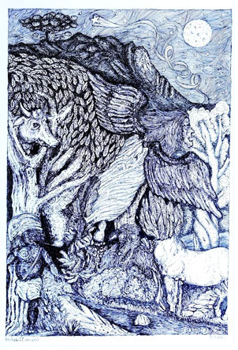
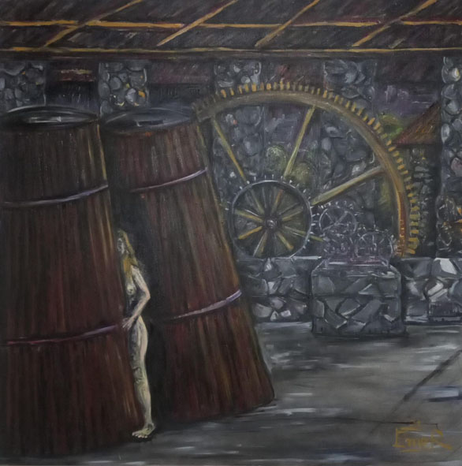

LENDA CAINGANG
(Obs.: Foi mantida a ortografia empregada
por Romário Martins e textos conforme constam na edição de 1937 abaixo
citada.)
— Uma lenda Caingang sobre a origem da raça, refere que, por ocasião do diluvio, que só deixou á flor das aguas a Serra CRINJIJINBE (Serra do Mar) onde se alojaram os Caingangs, os Caiurucrês, os Camés e os Curutons, foram salvos pelas saracuras e patos, que a pedido dos Caingangs, aterraram uma região para onde se removeram aqueles índios. As almas dos Caiurucrês e dos Camés que se afogaram penetraram o interior da Serra e por sua vez abriram dous caminhos pelos quais saíram com o abaixamento das aguas; no caminho aberto pelos primeiros brotou um arroio em terra plana e sem pedra, donde provêm terem os Caiurucrês pés pequenos; o caminho aberto pelos Camés, foi aberto em terra seca e pedregosa, que lhes incharam os pés na jornada, donde lhes vem terem-nos grandes até hoje. Os Curutons, que por preguiça nada fizeram por ocasião do dilúvio, deixaram-se ficar na Serra e quando noutra parte são encontrados, os Caingangs os prendem e reduzem á escravidão.
Salvos do dilúvio desde logo os Caiurucrês passaram a criar uma fauna para as florestas que iam resurgindo, porque as águas haviam afogado todos os animais exceto os peixes e as aves. Com cinza e carvão fizeram tigres, só com cinzas fizeram antas, etc. até que repovoaram os sertões de caça. Os Camés, por sua vez, criaram animais capazes de lutar com os que os Caiurucrês haviam creado: a puma, as cobras e as vespas.
Enquanto Caiurucrês e Camés, creavam a fauna postdiluviana da lenda Caingang estes caçavam na floresta. Encontrados, no campo, os Caiurucrês e os Camés resolveram constituir uma só família. E casaram-se os filhos dos primeiros com as filhas dos segundos. Mas havia mais homens do que mulheres e assim os jovens Caiurucrês e Camés que não encontraram par nas suas tribus, casaram-se com as filhas dos Caingangs.
Segundo a lenda narrada pelo cacique Arakchó, (Gralha Branca) as três tribus são aparentadas. Pertencem ao grupo CRÊN (parente, família, filho) de Martius.
Os Caingangues só se fixaram ao norte do Iguassú após o apresamento e o exôdo dos Guaranis domesticados pela catequese no território de Guaíra. Mas então o fizeram numa imigração em massa, no sentido da vasta zona que vai da Serra Geral aos rios Paraná e Paranapanema dominando os vales e as margnes do Tibagí, Ivaí, Piquirí e seus grandes afluentes, seguindo outros em direção Sul até Passo Fundo (Rio Grande do Sul) onde em 1845 os sertanistas curitibanos Rocha Loures e Hermogenes Carneiro Lobo os encontraram, bem assim a expedição do major Morais Jardim quando em 1860 fez a exploração do traçado Campo-Erê — Corrientes, entre cujos índios, de torna viagem da imigração norte, se achava o cacique Focrã com a sua gente, que o Padre Chagas catequisára em Guarapuava.
Explicando esssa imigração contava um velho índio do Jataí, que ela fora motivada por uma guerra das tribus do território das Missões (Iguassú-Uruguai) onde permaneceram até que foram, no correr do tempo, dizimados pela população branca. Dessas tribus mais bravias, Condá, que assaltou a expedição de Pedro Siqueira, foi o último cacique de prestigio.
Os Caingangs, como os Guaranis, se distinguiam por várias denominações tribais. Assim pertenciam a esse grande grupo os Chocrêns, Votorões, Dorins, Caiurucrês, Camés, com cujos nomes eram conhecidos os índios de Guarapuava na época das explorações oficiais desses campos e sertões pelas bandeiras de 1768 e 1771.
MARTINS, Romário. História do Paraná. Empresa Gráfica
Paranaense, Curitiba-PR, 1937. pág. 52.
LENDAS DA ESTRADA DA ANHAIA

Arte e texto de Emersom Ramos
O trabalho faz referência as lendas da estrada da Anhaia, contadas pelos antigos moradores da região, como a lendas da mula sem cabeça, muito comuns as suas aparições galopando pelas estradas, entre as plantações; saci pererê, que vivia fazendo traquinagens pela rua; lobisomem, sua aparição era excluisiva para os dias de lua cheia, onde gerava espanto na comunidade; bruxas, passavam pela noite, dando gargalhadas pelos ares, confundido a todos e a lenda dos bois que apareciam em cima das árvores, relacionada aos tesouros perdidos e escondidos na região.
A pesquisa faz referência à cultura oral do bairro, uma prévia do valor da região que se desenvolveu atraves dos ciclos de Morretes.

Arte e texto de Emersom Ramos
LENDA DAS TRÊS IRMÃS E A CACHAÇA
"Conta a lenda que eram três irmãs que moravam juntas, duas mais velhas e uma mais nova. De tempos em tempos as mais velhas saiam a noite, sem dizer onde iriam, e só no outro dia retornavam, todas estranhas. Com o passar do tempo isso foi se tornando cada vez mais frequente; certo dia, a mais nova percebeu que as irmãs iriam sair, ficou zangada e falou que iria junto aonde elas fossem, as irmãs mais velhas com receio, decidiram compartilhar com a irmã o grande segredo.
Elas falaram que aquilo que iriam fazer, já estava com sua família a gerações, um segredo oculto, guardado pelos seus ancestrais, e que durante aquele processo ela não poderia falar nome de Deus ou Santo nenhum. Então à levaram em um lugar na selva cheio de ervas, uma fogueira ao centro, rodeados de cinzas; durante o ritual elas foram tirando as roupas e falando palavras ordenadas em instantes corretos, se espojando e rolando nas cinzas ao chão. Surpreendentemente começaram a criar asas, a irmã mais nova em fim consegue descobrir o que queria saber e também começa a fazer parte daquele mistério da vida.
As irmãs mais velhas falaram que iriam nos engenhos de cachaça no sopé da serra. No caminho as alturas, vinham dando risadas e assustando e deixando confuso os moradores dos arredores de onde passavam. Em determinado ponto ficam em silêncio, chegando ao engenho, ficam quietas, sem fazer barulho. Tomando muita cachaça e vinho de coxo; a irmã mais nova, que não estava acostumada a beber, quebra a torneira da dorna, e a cachaça vazou por todo o chão, desesperada exclamou “meu Bom Jesus o que eu faço”, na hora houve um estouro, onde as irmãs mais velhas saíram voando, e ela perdeu o seu encanto, ficando no engenho sem saber o que fazer.
Antes do raiar do dia, o cuidador do engenho foi lambicar, e se deparou com aquela jovem nua, se escondendo atrás das dornas de cachaça. Ele vai até a casa ao lado e fala para sua esposa que imediatamente leva roupas para a moça, que ainda estava assustada com todo o ocorrido, não sabia seu nome e nem de onde tinha vindo. Daquele dia em diante, ali foi seu novo lar, pois o senhor e senhora cuidadores do engenho, lhe acolheram como uma filha."
Esse conto faz parte das histórias mais antigas da estrada da Anhaya, localidade que se desenvolveu as margens do Rio do Pinto e Caminho do Arraial, envoltos de engenhos de erva-mate que depois vieram a ser de cachaça.
(História contada por Alcindo Ramos, avô do Emersom Ramos).
|